24 小时精选09-14 10:30 北京时间
过去 24 小时 1 本册 · 候选 11 只 · 导读 11 只。只收「3D+1D 同向」「★ 日线刚翻」两类。临近财报的照常列出，单独标红——信号在财报前基本作废，看不看由你定。
宏观日程（纽约时间）
09-15 周二 FOMC 第一天（闭门）
09-16 周三 08:30零售销售 8月
09-16 周三 14:00FOMC 决议 + 点阵图 + 经济预测
09-16 周三 14:30沃什记者会
09-17 周四 08:30初请失业金 + 新屋开工 8月
09-17 周四 美联储噤声期结束
今日导读先 3D+1D 都新鲜，再 ★ 日线刚翻；转折类按 RSI14 极端度、延续类按「跑输后翻多」 · 点图放大
宏观CN1!富时中国A50指数期货空4510.15 -0.8%今天新触发
3D 与 1D 同向空，两个周期都是最新一根 K 线 · 最新 K 线刚触发：3D/1D/2H/6H · 21 日相对基准 +0.2%，跑赢后翻空 · RSI14 32
3D 空 09-07 · 1D 空 09-10 · 6H 空 09-12 · 2H 空 09-12
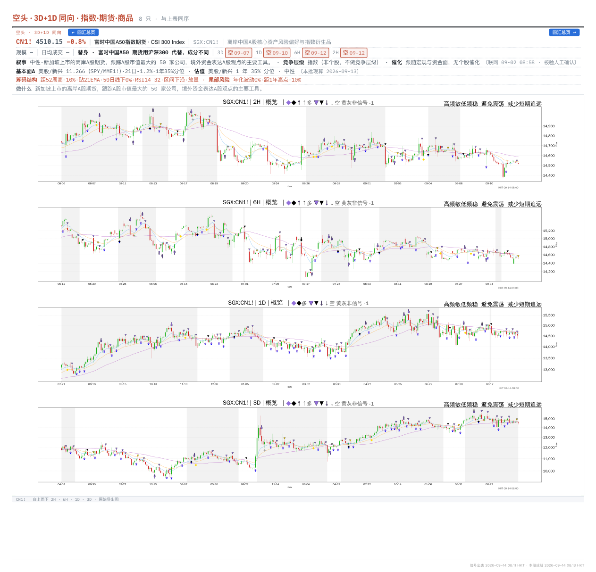
出自 0913 Macro 0811 bjt 第 19 页
宏观IC1!中证500股指期货（中国金融空7580.54 -1.8%今天新触发
3D 与 1D 同向空，两个周期都是最新一根 K 线 · 最新 K 线刚触发：3D/1D/2H
3D 空 09-10 · 1D 空 09-11 · 2H 空 09-11
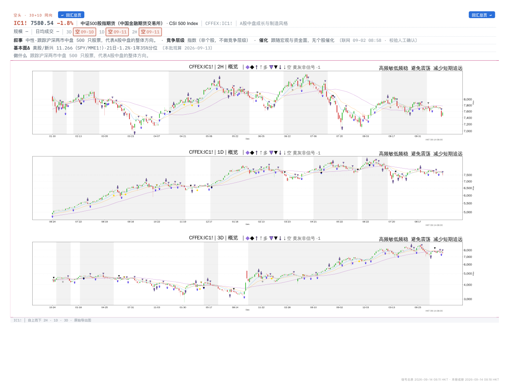
出自 0913 Macro 0811 bjt 第 20 页
宏观IM1!中证1000指数期货（中国金空7427.24 -2.1%今天新触发
3D 与 1D 同向空，两个周期都是最新一根 K 线 · 最新 K 线刚触发：3D/1D
3D 空 09-10 · 1D 空 09-11
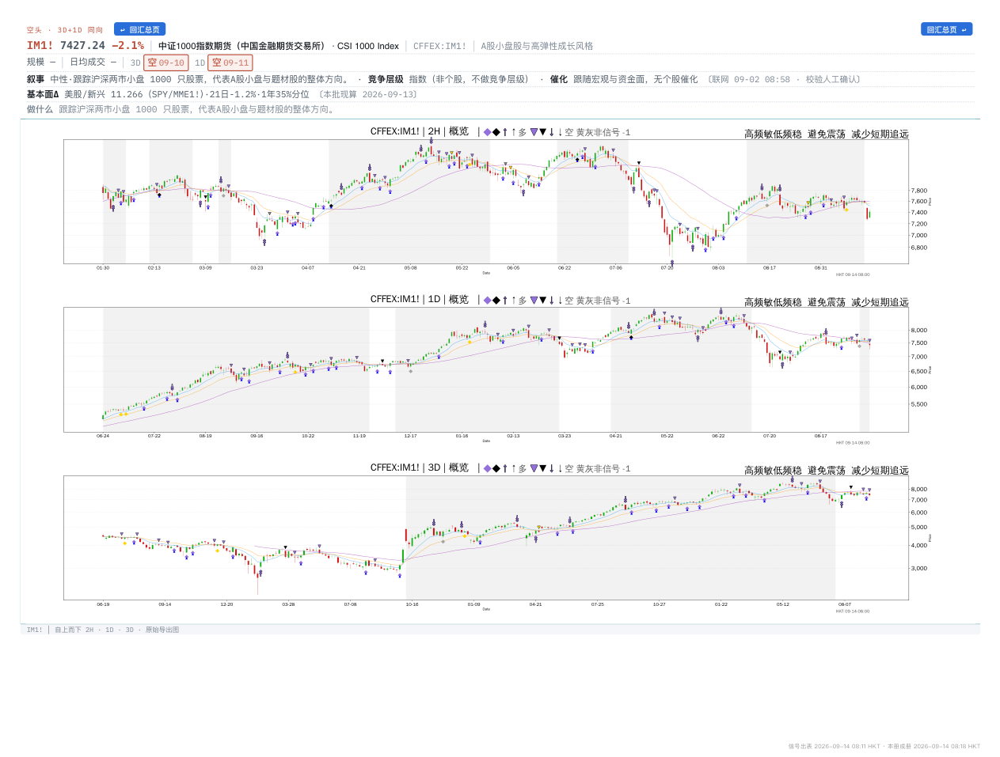
出自 0913 Macro 0811 bjt 第 21 页
宏观NK2251!日经225期货（Nikkei空63682.55 -0.5%今天新触发
3D 与 1D 同向空，两个周期都是最新一根 K 线 · 最新 K 线刚触发：3D/1D/2H/6H · 21 日相对基准 -2.9%，顺势 · RSI14 39 · 走势 震荡（ER 0.23）
3D 空 09-10 · 1D 空 09-10 · 6H 空 09-14 · 2H 空 09-14
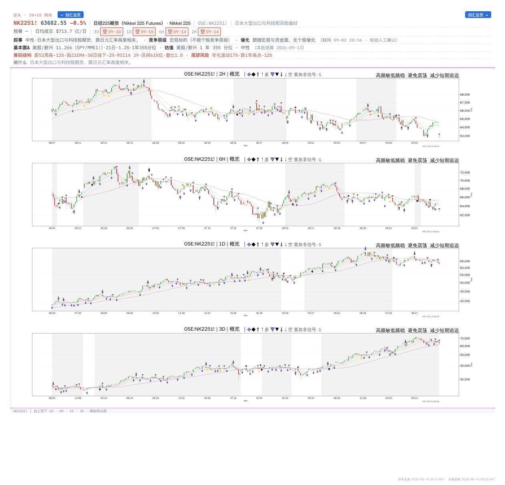
出自 0913 Macro 0811 bjt 第 22 页
宏观XAGUSD白银现货/Silver Sp多64.72 -0.7%今天新触发
日线刚翻多，3D 仍空 · 最新 K 线刚触发：3D/1D/2H/6H · 21 日相对基准 -6.6%，跑输后翻多 · RSI14 46 · 走势 偏震荡（ER 0.28）
3D 空 09-09 · 1D 多 09-09 · 6H 空 09-14 · 2H 空 09-14
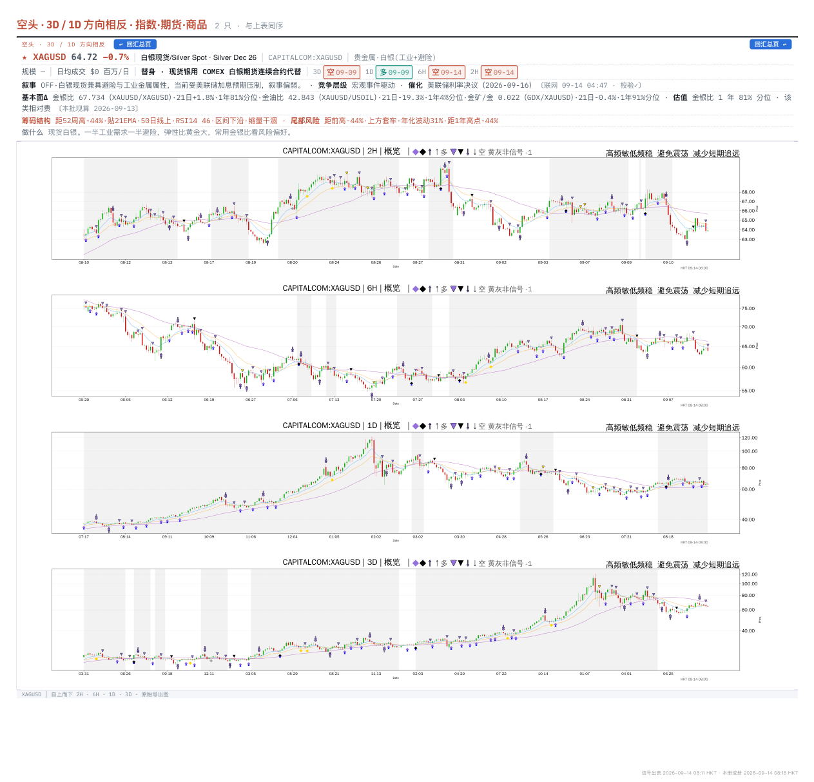
出自 0913 Macro 0811 bjt 第 27 页
宏观K2I1!韩国KOSPI200指数期货多6909.91 -1.8%今天新触发
日线刚翻多，3D 没跟 · 最新 K 线刚触发：1D/2H/6H · 21 日相对基准 +0.1%，顺势 · RSI14 54 · 走势 震荡（ER 0.00）
3D 多 09-02 · 1D 多 09-11 · 6H 多 09-11 · 2H 多 09-12
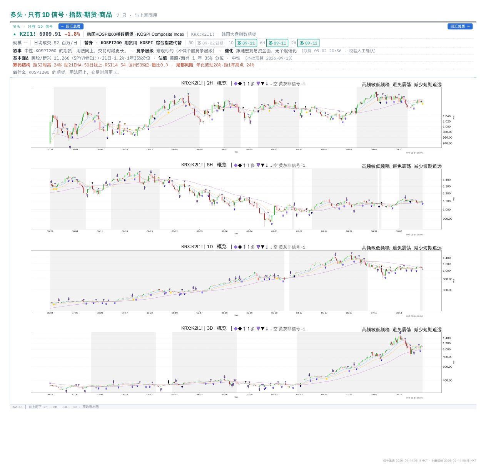
出自 0913 Macro 0811 bjt 第 6 页
宏观MME1!MSCI新兴市场期货空67.84 +1.3%今天新触发
3D 与 1D 同向空，3D 是前几根 bar 的 · 最新 K 线刚触发：3D · 21 日相对基准 +1.3%，跑赢后翻空 · RSI14 54 · 走势 震荡（ER 0.09）
3D 空 09-10 · 1D 空 09-10 · 6H 空 09-12
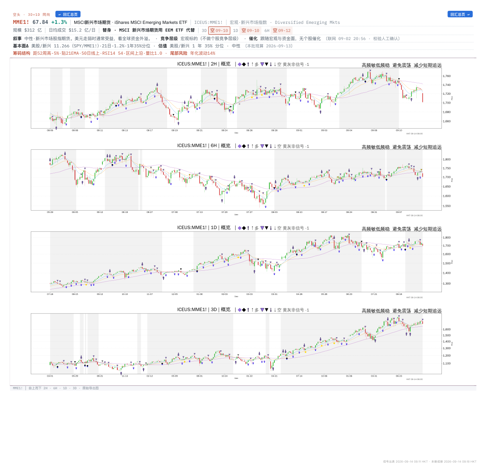
出自 0913 Macro 0811 bjt 第 25 页
宏观OIH油服ETF(VanEck)空420.67 -0.6%
3D 与 1D 同向空，3D 是前几根 bar 的 · 21 日相对基准 +1.5%，跑赢后翻空 · RSI14 51 · 走势 震荡（ER 0.08）
3D 空 09-09 · 1D 空 09-10
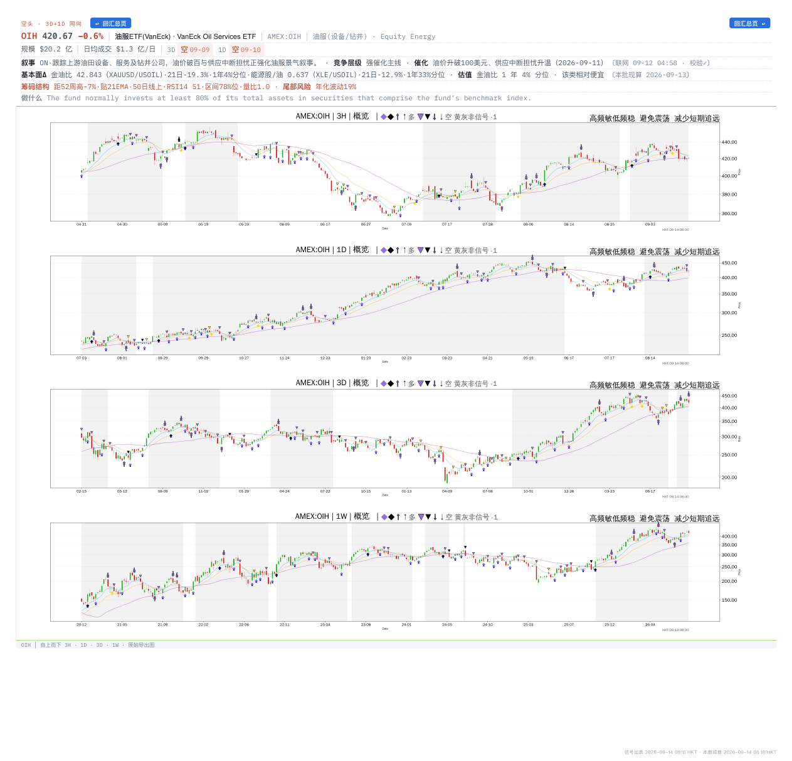
出自 0913 Macro 0811 bjt 第 26 页
宏观FESX1!欧洲斯托克50指数期货（EU空6325.13 +0.8%今天新触发
3D 与 1D 同向空，3D 是前几根 bar 的 · 最新 K 线刚触发：3D/2H/6H · 21 日相对基准 -1.9%，顺势 · RSI14 39 · 走势 偏震荡（ER 0.26）
3D 空 08-31 · 1D 空 09-09 · 6H 多 09-11 · 2H 多 09-12
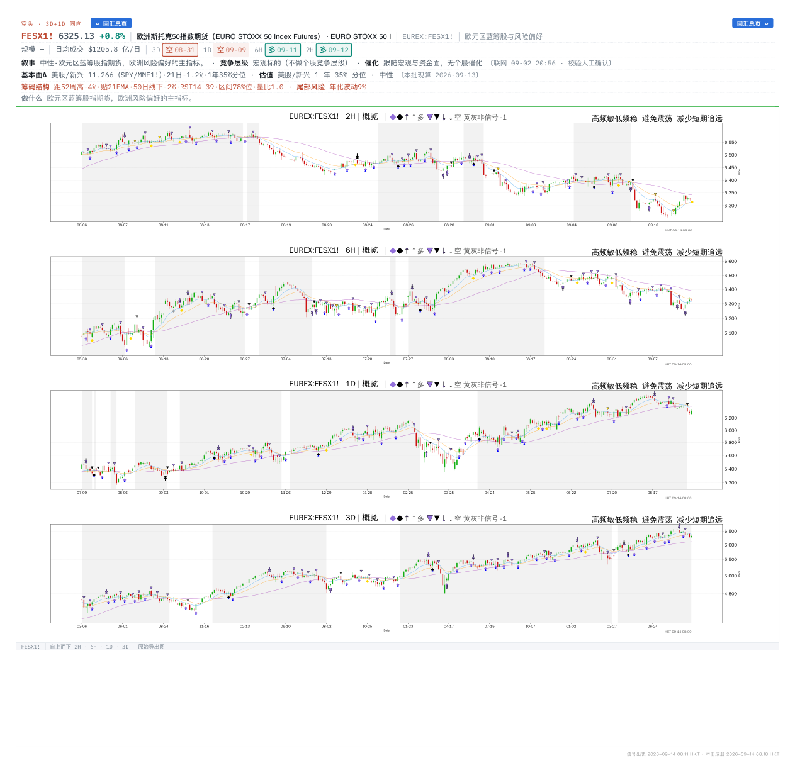
出自 0913 Macro 0811 bjt 第 24 页
宏观KBWBInvesco KBW Ba多96.85 +0.5%
3D 与 1D 同向多，3D 是前几根 bar 的 · 21 日相对基准 +1.5%，顺势 · RSI14 50 · 走势 震荡（ER 0.15）
3D 多 09-09 · 1D 多 09-11 · 3H 多 09-11
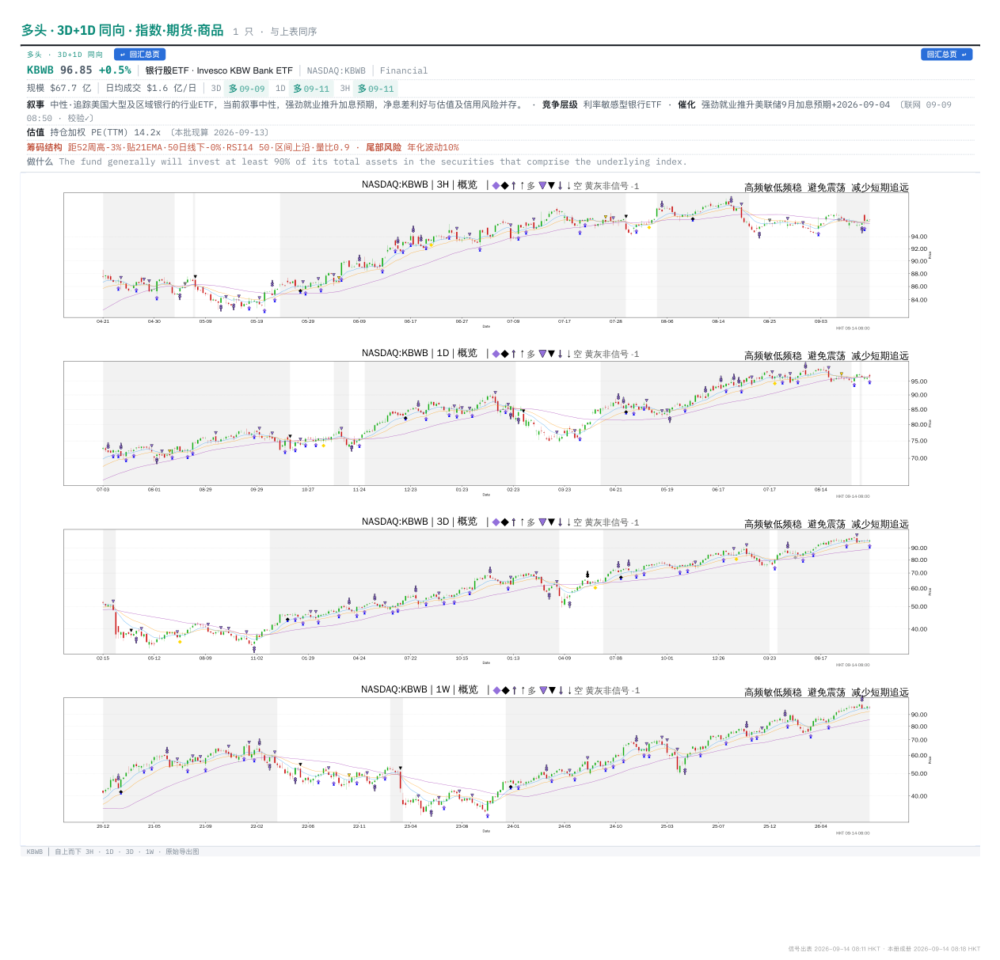
出自 0913 Macro 0811 bjt 第 5 页
宏观NQ1!纳指100迷你期货/E-mi空29069.25 -1.1%今天新触发
3D 与 1D 同向空，3D 是前几根 bar 的 · 最新 K 线刚触发：1D/6H · 21 日相对基准 -0.9%，顺势 · RSI14 41 · 走势 震荡（ER 0.11）
3D 空 09-09 · 1D 空 09-14 · 6H 空 09-14 · 2H 空 09-12
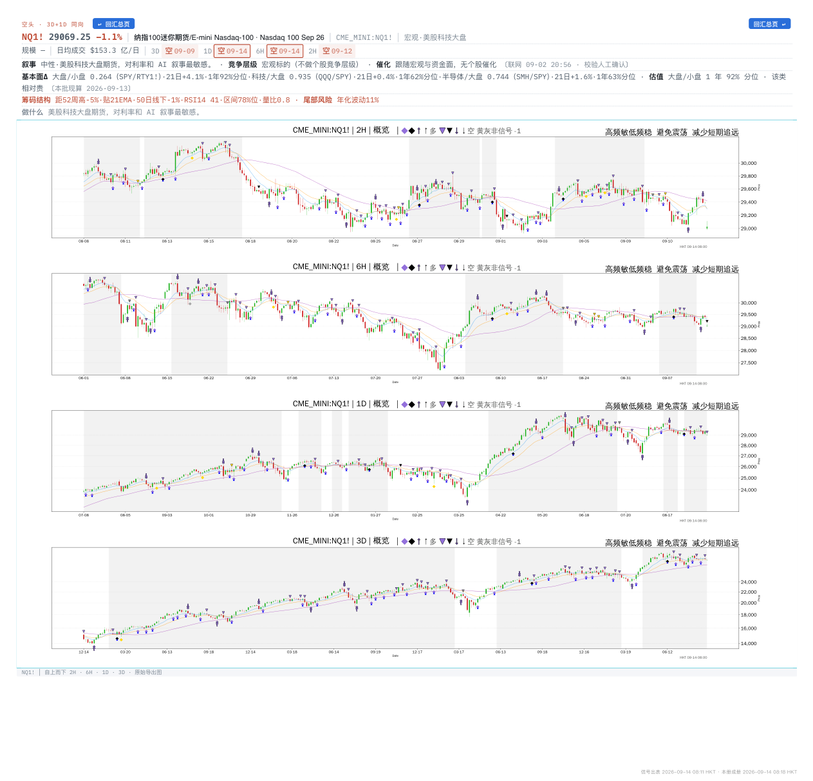
出自 0913 Macro 0811 bjt 第 23 页
全部候选按市场展开 · 同一只票只留最新一册
宏观11 只
| 代码 | 名称 | 方向 | 周期 | 现价 | 日涨跌 | RS21 | RSI14 | 财报 | 出自 · 点开归档 |
|---|
| CN1! | 富时中国A50指数期货 | 空 | 3D 空 09-07 · 1D 空 09-10 · 6H 空 09-12 · 2H 空 09-12 | 4510.15 | -0.8% | RS +0.2 | RSI 32 | | 0913 Macro 0811 bjt |
| IC1! | 中证500股指期货（中国金融 | 空 | 3D 空 09-10 · 1D 空 09-11 · 2H 空 09-11 | 7580.54 | -1.8% | | | | 0913 Macro 0811 bjt |
| IM1! | 中证1000指数期货（中国金 | 空 | 3D 空 09-10 · 1D 空 09-11 | 7427.24 | -2.1% | | | | 0913 Macro 0811 bjt |
| NK2251! | 日经225期货（Nikkei | 空 | 3D 空 09-10 · 1D 空 09-10 · 6H 空 09-14 · 2H 空 09-14 | 63682.55 | -0.5% | RS -2.9 | RSI 39 | | 0913 Macro 0811 bjt |
| XAGUSD | 白银现货/Silver Sp | 多 | 3D 空 09-09 · 1D 多 09-09 · 6H 空 09-14 · 2H 空 09-14 | 64.72 | -0.7% | RS -6.6 | RSI 46 | | 0913 Macro 0811 bjt |
| K2I1! | 韩国KOSPI200指数期货 | 多 | 3D 多 09-02 · 1D 多 09-11 · 6H 多 09-11 · 2H 多 09-12 | 6909.91 | -1.8% | RS +0.1 | RSI 54 | | 0913 Macro 0811 bjt |
| MME1! | MSCI新兴市场期货 | 空 | 3D 空 09-10 · 1D 空 09-10 · 6H 空 09-12 | 67.84 | +1.3% | RS +1.3 | RSI 54 | | 0913 Macro 0811 bjt |
| OIH | 油服ETF(VanEck) | 空 | 3D 空 09-09 · 1D 空 09-10 | 420.67 | -0.6% | RS +1.5 | RSI 51 | | 0913 Macro 0811 bjt |
| FESX1! | 欧洲斯托克50指数期货（EU | 空 | 3D 空 08-31 · 1D 空 09-09 · 6H 多 09-11 · 2H 多 09-12 | 6325.13 | +0.8% | RS -1.9 | RSI 39 | | 0913 Macro 0811 bjt |
| KBWB | Invesco KBW Ba | 多 | 3D 多 09-09 · 1D 多 09-11 · 3H 多 09-11 | 96.85 | +0.5% | RS +1.5 | RSI 50 | | 0913 Macro 0811 bjt |
| NQ1! | 纳指100迷你期货/E-mi | 空 | 3D 空 09-09 · 1D 空 09-14 · 6H 空 09-14 · 2H 空 09-12 | 29069.25 | -1.1% | RS -0.9 | RSI 41 | | 0913 Macro 0811 bjt |
本批册子点册名在 Drive 里打开